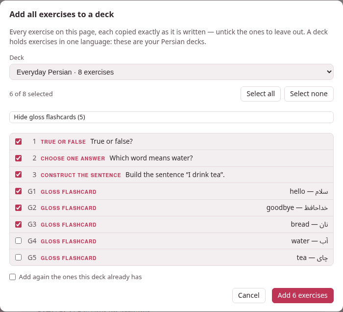

Filling a deck
There are five ways into a deck, and they all arrive at the same place: one exercise, in the deck’s language, new, waiting to be studied.
1. One exercise from a document: + Deck#
On a studio document’s page — the reading view, not the editor — every exercise carries a + Deck button in its head. An exercise inside a > box has one too. Press it and a small dialog asks where the exercise goes:
- It names what you are copying — True or false — copied exactly as it is written here — and reminds you that a deck holds exercises in one language: the list shows only your decks in the document’s language.
- Deck is that list, each deck with how many exercises it holds (
Everyday Persian · 8 exercises). The deck you used last for this language is already chosen. - + New deck…, at the foot of the list, makes a deck on the way: choose it and a Name of the new deck field appears. With no deck yet in this language, that is where the list starts.
Copy puts the exercise into the deck and says Copied into “Everyday Persian”.
What goes in is the exercise exactly as it is written, and everything it needs to be read on its own:
- The footnotes it calls.
- Their definitions come along, and only those.
- Every picture and recording it names
- , wherever it names them: a card’s
front-imageorback-audio, an exercise’simage:oraudio-answer:, a picture or recording line inside a jolly card’s field, a picture inside an answer or a footnote. They are copied into the deck’s ownimages/andaudio/folders. - The document’s tags
- , which become the exercise’s tags in the deck — handy later, to pick them out again.
- Where it came from.
- The deck’s list says from and the document’s title, linked to it.
A picture whose name the deck already uses for a different file is stored under another name — cat-2.png, then cat-3.png — and the exercise’s reference to it is rewritten to match, so neither picture is lost. The same file already in the deck is not copied a second time. A picture or recording the document itself has lost keeps its path in the exercise, and the confirmation says which: the exercise still goes in, and you can upload the file to the deck later.
When the copy asks, or refuses#
- The same exercise is already in that deck. The browser asks This exercise is already in “Everyday Persian” — add it again?. OK adds a second copy; Cancel adds nothing.
- The document was saved since this page was loaded — in the editor in another tab, say. The copy is refused with This page is out of date — reload it, then copy, because the button counts exercises on the page you see, and the saved document may have them in another order: the copy could otherwise take the wrong one. Reload the page and press the button again.
- An exercise that shows an error (a missing answer, an unknown field) has no + Deck button at all: a deck only takes exercises that work. Put it right in the editor first.
- If a deck you made with + New deck… could not take the exercise after all, it is removed again, so a failed copy leaves no empty deck behind.
The editor’s preview has no + Deck buttons; the reading view does. And notes — a studio document opened beside a book or a video — have them too: the deck’s list then links back to that note, on its book or video.
2. A whole page at once: + Add all exercises#
At the top of a document’s reading view, beside Edit, + Add all exercises copies as many of the page’s exercises as you like in one go. It appears when the page has at least one exercise, or at least one gloss, to copy.

The dialog lists every exercise that has a + Deck button, in the page’s order, numbered as they come and each with its kind and first words — all of them ticked:
- Untick the ones to leave out. Select all and Select none tick and untick the whole list, and the line above it counts
3 of 3 selected. - Choose the deck, or + New deck… and a name, as for + Deck.
- Add again the ones this deck already has: without the tick, an exercise the deck already holds is left out and counted; with it, it goes in a second time.
- The button says how many will go in: Add 3 exercises. They are copied one after the other, exactly as + Deck copies one, while the dialog counts Adding 2 of 3….
When it is done, one message says what happened: Added 3 exercises to “Everyday Persian”, and after it how many were already there and left out, how many the deck refused and why (the first reason), and any picture that was missing. One exercise refused does not stop the others. If nothing went in — every one already in the deck, say — the dialog stays open and tells you, so you can tick Add again, or pick another deck. And if the document was saved elsewhere since the page loaded, the run stops at once and asks you to reload: every exercise after that point could be the wrong one. A deck made with + New deck… for a run that then added nothing is removed again.
An exercise that shows an error is not offered, and the dialog says how many were left out that way.
Gloss flashcards#
A document’s glosses — a target word followed by its meaning, the ones the ⇄ Glosses table of the page lists — can come into the deck too, each as a vocabulary flashcard. Show gloss flashcards (5) adds them to the list, numbered G1, G2…, with the word and its meaning, ticked like the rest; Hide gloss flashcards takes them out of the list again (and out of what is added).
Written like this in the document:
The greeting [سلام]{translit:salâm} = *hello* is said on arriving, and[خداحافظ]{translit:xodâhâfez} = *goodbye* on leaving.The greeting سلام = hello is said on arriving, and خداحافظ = goodbye on leaving.
the first gloss comes into the deck as this card:
:::exercise flashcardcard-type: vocabtarget: سلامtransliteration: salâmmeaning: hello:::The card takes the word, its reading (the kana of a Japanese word) and its transliteration when the document gives them, and the meaning; like the other exercises it takes the document’s tags and links back to the document. It is made on the server from the document as saved — never from what the page happens to show — and a card the deck already has is left out as an exercise would be.
3. In the deck: Add exercise…#
On a deck’s page, Add exercise… opens the same form the studio editor’s Exercises ▾ → Add exercise… opens: the grid of exercise types, then a form for the one you pick, with its preview drawn below — in the deck’s language, solved, so that you see what you are writing. Add to deck saves it.
- Paste markdown…
- , under the grid, takes an exercise copied as markdown — the copy markdown of a card sheet in a book or a video gives one, and so does any
:::exerciseblock you copy out of a document. Paste it in the box and Open in the form (or Ctrl+Enter): it opens in the form as a new exercise, to look over before Add to deck. Pressing Ctrl+V on the grid itself does both at once. Words around the block are left out; text with no exercise in it, or with two, is refused with a note saying so. - Pictures and recordings.
- A flashcard’s picture and recording fields have Upload…, which stores the file in the deck and fills in its path; a recording field has a ▶ to hear it. A jolly card’s field has Image… and Recording…, which upload a file and put its line in at the cursor. Pictures may be PNG, JPEG, SVG or PDF, up to 15 MB; recordings MP3, M4A, AAC, Ogg, Opus, WAV, FLAC or WebM, up to 30 MB, and a recording that holds no sound is refused. A large upload shows on the Working… pill while it goes up.
- What a deck takes
- is exactly one
:::exerciseblock, with nothing around it and no errors — the form writes one; a hand-written one that is not is refused with the reason (this is not one exercise: it holds 2, the exercise needs attention: …). - Already there?
- An exercise the deck already holds asks Already in this deck … Add it a second time? — Add again, or Cancel, and the form stays open so you can still change it.
- A picture or recording it names that the deck does not have
- does not stop the save: the exercise is added, and the message says which file is missing — images/cat.png is not among this deck’s pictures: upload it, or the card shows a broken picture.
4. From a book or a video#
The card sheet that a modifier-click on a word opens — in a book’s reader and in a video’s player — makes cards for three places, chosen at its top: Anki, exercise deck and markdown. With exercise deck:
- deck lists the exercise decks in the book’s or the video’s language, with + new deck… at the end;
- the card is a vocabulary or opposites flashcard made from the word, or a jolly card whose four fields start from it;
- a recording cut with 🔊 cut the audio… goes in as the card’s
front-audioorback-audio(on a jolly card, as a line in a field), and a frame captured from a video as itsfront-imageorback-image; - add to deck adds it. A card the deck already holds is refused once, and the button becomes add it again.
The deck remembers where the card was made, and its list links back to that moment: the book’s reader at the paragraph, labelled with the book’s title and the subparagraph’s number, or the video’s player at the card’s second. The markdown destination puts the same card on the clipboard instead, ready for Paste markdown… above. The card sheet itself is explained with the books and the videos, in the section on cards and Anki.
5. From the clip tray#
A recording you cut in a book or a video, and a frame you capture from a video for an exercise deck or for markdown, wait in the toolbox’s clip tray under a name no other file in the toolbox has. When an exercise is added to a deck, or saved in it, and it names such a file that the deck does not have, the file is copied in from the tray. That is how a card copied as markdown and pasted into Add exercise… → Paste markdown… arrives with its sound: the form’s preview already plays it from the tray, and saving brings it into the deck.
The tray keeps its own copy, and the deck keeps its own: emptying the tray afterwards (the hub’s The clip tray, ✕ on a clip or Empty the tray) takes nothing away from the deck.
6. Links to documents in a deck’s exercise#
An exercise may link to a studio document by its name, [the plural](doc:Persian plurals), as a document does. In a deck the link still opens that document from the studio’s library — and when the document is renamed, the link in the deck’s exercise follows the new name, as the links in the documents themselves do.